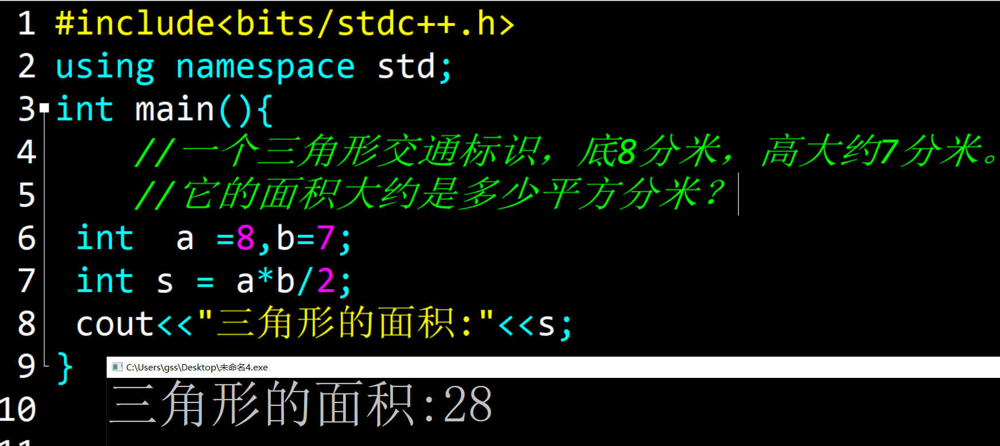
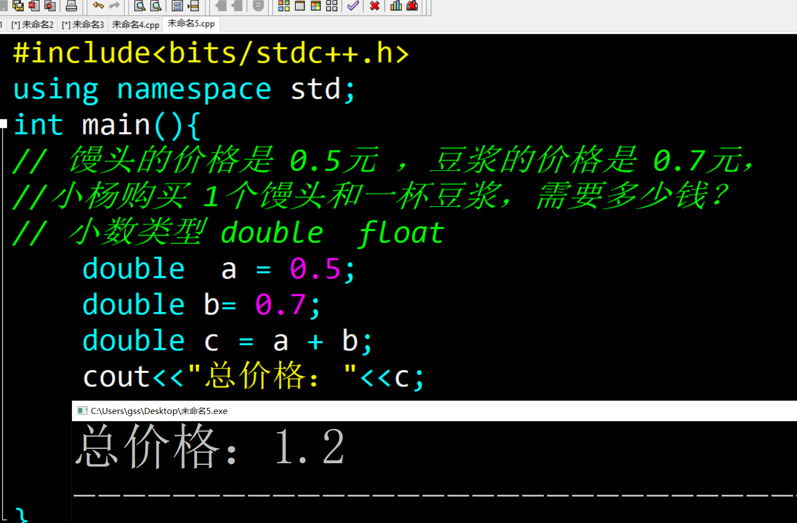
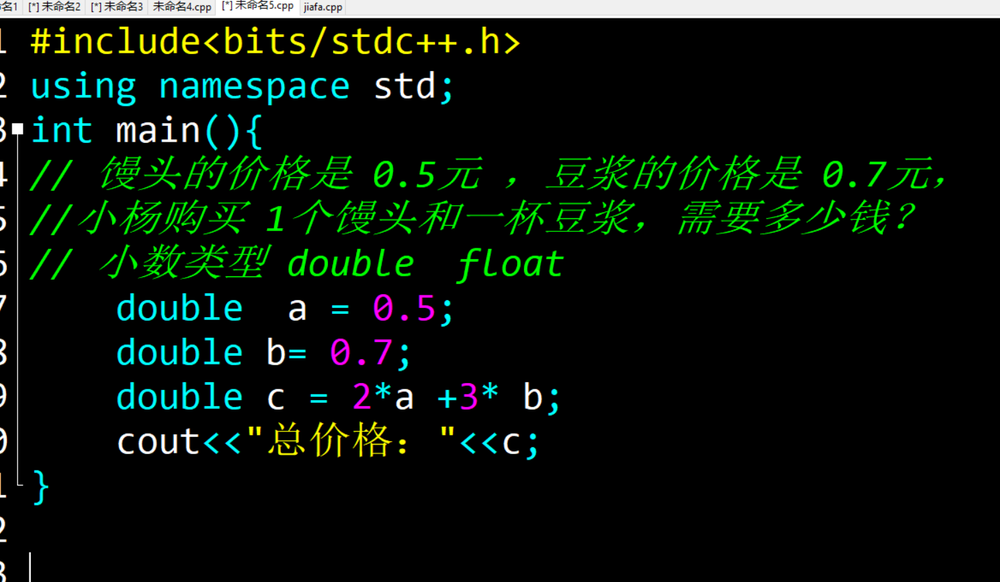
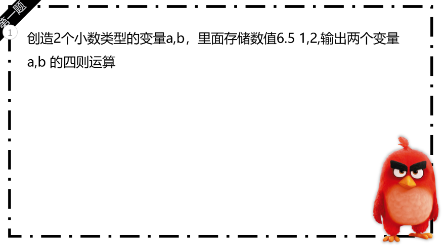
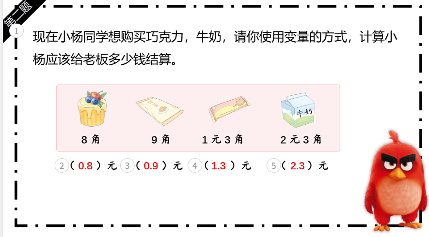
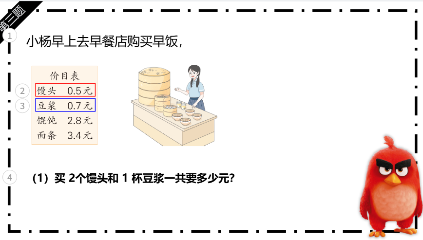

预科6课 小数和格式化
知识点梳理内容
变量基本语法
- 变量的认识： 变量是一个可以改变的数值，可以用来存储数值，数值可以是整数，小数，文字等，类似生活中盒子！
-
变量的创建：
对应的格式： 数据类型 变量名称 = 数值;
数据类型 语法
-
数据类型的区分：
整数变量 int
小数变量 double
-
小数变量的创建 ：
1. 类型 变量名称 = 数值 ；
2. double a = 1.6;
重点难点解析
变量的要点
-
变量的认识：
1. 理解变量生活的类比
2.变量起名不能重复，区分大小写，只可以使用字母，数字，下划线，期其中包含数字的情况，数字不能放到开头！ -
变量的创建：
1. 创造单一变量，里面进行数值的存储
2.多个变量的创建，存储数值，内容输出！
- 变量的应用： 理解函数的定义、声明与调用，掌握形参与实参的传递方式，能编写自定义函数实现模块化编程。
-
变量输入：
1. 变量的创建，不存储数值
2. 输入 使用的是cin
-
案例代码：
int a,b;
cin>>a>>b;
cout<
配套练习
- 基础语法练习1 ：三角形的面积
- 基础语法练习2 ：用for循环输出10-20之间的所有偶数
- 综合练习3：用循环计算“1!+2!+3!+…+5!”（5的阶乘累加）
📸 参考代码与练习说明
示例1：三角形的面积
【题目】一个三角形交通标识，底8分米，高大约7分米。它的面积大约是多少平方分米？
【思路】 1.创造2个变量 a,b 表示三角形的底和高 ，秋面积
【关键代码】 无
【说明】三角形的面积 = 底 * 高 / 2

示例2：小杨的早餐
【题目】 馒头的价格是 0.5元 ，豆浆的价格是 0.7元， 小杨购买 1个馒头和一杯豆浆，需要多少钱？
【思路】 小数类型的变量
【关键代码】 加法运算

示例3：小杨的早饭2
【题目】馒头的价格是 0.5元 ，豆浆的价格是 0.7元， 小杨购买 2 个馒头和 3杯豆浆，需要多少钱？。
【思路】 小数类型的变量
【关键代码】 加法运算

作业练习
- 作业练习1 ：小数创建
- 作业练习2：买文具
- 作业练习3：买早饭


